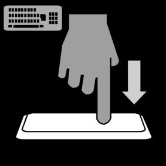

<!DOCTYPE html>
<html>
    <head>
        <script src='jspsych/dist/jspsych.js'></script>
        <script src='jatos.js'></script>
        <script src='jspsych/dist/plugin-preload.js'></script>
        <script src='jspsych/dist/plugin-html-slider-response.js'></script>
        <script src='jspsych/dist/plugin-html-keyboard-response.js'></script>
        <script src='jspsych/dist/plugin-html-button-response.js'></script>
        <script src='jspsych/dist/plugin-survey-multi-choice.js'></script>
        <script src='jspsych/dist/plugin-survey-text.js'></script>
        <script src='jspsych/dist/plugin-virtual-chinrest.js'></script>
        <script src='jspsych/dist/plugin-fullscreen.js'></script>
        <script src='jspsych/dist/plugin-webgazer-init-camera.js'></script>
        <script src='jspsych/dist/plugin-webgazer-calibrate.js'></script>
        <script src='jspsych/dist/plugin-webgazer-validate.js'></script>
        <script src='jspsych/dist/plugin-survey-html-form.js'></script>
        <script src ='jspsych/dist/plugin-instructions.js'></script>
        <script src="jspsych/dist/plugin-image-keyboard-response.js"></script>


        <link href='jspsych/dist/jspsych.css' rel='stylesheet'>

        <style> 
            .sv_complete_btn {
              font-size: 28px;
            }
            .sv-action__content {
                width: 480px;  
                height: 100px;  
                display: flex;  
                justify-content: center;  
                align-items: center;  
            }
        </style>
    </head>
    <body>
    </body>

    <script>
        var jsPsych = initJsPsych({
            on_finish: () => jatos.endStudy(jsPsych.data.get().json())
        });
       

        

        ////////////////////////////////////////////////////////////////////////////////////
        // Instructions / pre-exp screens according to the order in the experiment        //
        ////////////////////////////////////////////////////////////////////////////////////
        
        var pixelsPerDegree = 50; // default, will be updated after chinrest
        
        // using a virtual chinrest to make the size (in VA) constant across participants //
        var virtual_chinrest = {
            type: jsPsychVirtualChinrest,
            blindspot_reps: 3,
            resize_units: "deg",
            pixels_per_unit: 50,
            item_path: 'stimuli/credit_card.png'
        };
        
        var get_pixels_per_degree = {
            type: jsPsychHtmlKeyboardResponse,
            stimulus: "<p>Calibrating image size...</p>",
            choices: "NO_KEYS",
            trial_duration: 100,
            on_start: function() {
                const chinrestData = jsPsych.data.get().filter({trial_type: 'virtual-chinrest'}).last(1).values()[0];
                if (chinrestData && chinrestData.pixels_per_degree) {
                    pixelsPerDegree = chinrestData.pixels_per_degree;
                    baselineZoom = detectZoomLevel();
                    jsPsych.data.addProperties({
                    pixels_per_degree: pixelsPerDegree,
                    baseline_zoom: baselineZoom
                    });
                } else {
                    console.warn("⚠️ Could not find pixels_per_degree — fallback to default (50)");
                    pixelsPerDegree = 50; // fallback
                }
                }
        };


        // zoom detection function
        function detectZoomLevel() {
            return window.devicePixelRatio || 1;
        }

        var baselineZoom = 1.0;

        var store_zoom_level = {
            type: jsPsychHtmlKeyboardResponse,
            stimulus: "<p>Checking browser zoom level...</p>",
            choices: "NO_KEYS",
            trial_duration: 100,
            on_start: function() {
                baselineZoom = detectZoomLevel();
                console.log("✅ Baseline Zoom Level:", baselineZoom);
            }
        };

        
 
        
        // show consent form before the experiment starts
        var consent_form = {
            type: jsPsychHtmlButtonResponse,
            stimulus: '<p style="font-size:36px";">Study consent form</p>' +
            '<p align="left"; style="font-size:20px";">The School of Psychological Sciences at Tel-Aviv University would like to thank you for participating in an important scientific study in the group-breaking field of cognitive psychology.</p>' + 
            '<p align="left"; style="font-size:20px";">The results collected from your response will greatly contribute to scientific progress and human development.</p>' +
            '<p align="left"; style="font-size:20px";">Tel-Aviv University supports the protection of participants in research. The following will provide you with information about the experiment that will help you in deciding whether or not you wish to participate.</p>' +
            '<p align="left"; style="font-size:20px";">If you agree to participate, please be aware that you are free to withdraw at any point throughout the duration of the experiment.</p>' +
            '<p align="left"; style="font-size:20px";">In this study you will be asked  to watch a video clip while trying to notice and report an unexpected change and answering questions about details of the clip.</p>' +
            '<p align="left"; style="font-size:20px";">All information you provide will remain confidential and will not be associated with your name.</p>' +
            '<p align="left"; style="font-size:20px";">Your participation in this study will take approximately 10 minutes.</p>' +
            '<p align="left"; style="font-size:20px";">If you have any further questions concerning this study please feel free to contact us through email: Liad Mudrik mudriklab2@gmail.com.</p>' +
            '<p align="left"; style="font-size:20px";">Your participation is solicited, yet strictly voluntary.</p>' +
            '<p align="left"; style="font-size:20px";">Please indicate below that you understand your rights and agree to participate in the experiment or exit the experiment if you do not wish to participate.</p>',
            choices: ['Consent']
        };

        // Preload all stimuli and masks
        var preload = {
            type: jsPsychPreload,
            images: [
                ...Array.from({length: 400}, (_, i) =>
                    `stimuli/pictures/image_${String(i + 1).padStart(3, '0')}.jpg`
                ),
                ...Array.from({length: 30}, (_, i) =>
                    `stimuli/masks/mask_${String(i + 1).padStart(2, '0')}.jpg`
                )
            ]
        };


     
        // get participant info
        var participant_info_questions = {
            type: jsPsychSurveyHtmlForm,
            html: `
                <p><label>Prolific ID: <input name="ProlificID" required></label></p>
                <p><label>Age: <input name="age" type="number" required></label></p>
                <p><label>Gender:
                    <select name="gender" required>
                        <option value="Female">Female</option>
                        <option value="Male">Male</option>
                        <option value="Other">Other</option>
                        <option value="Prefer not to answer">Prefer not to answer</option>
                    </select>
                </label></p>
                <p><label>Handedness:
                    <select name="handedness" required>
                        <option value="Left">Left</option>
                        <option value="Right">Right</option>
                    </select>
                </label></p>
            `,
            button_label: "Submit"
        };


        // Instructions and metadata collection
        var instructions = {
        type : jsPsychInstructions,
        pages : [
            '<p style ="font-size=24px">Welcome to our experiment!</p>' +
            '<p style ="font-size=26px">Press "Next" to read its instructions</p>',
            '<p style ="font-size=26px">In this experiment, you will see pairs of images presented one after the other.</p>' +
            '<p style ="font-size=26px">Your task is to rate how similar the two images are on a scale from "Very Different" to "Very Similar".</p>',
            '<p style ="font-size=26px">Please make sure to pay close attention to the images as they appear on the screen.</p>',
            '<p style ="font-size=26px">After viewing both images in a pair, use the slider to provide your similarity rating.</p>' + 
            '<p style ="font-size=26px">Press "Next" when you are ready to begin the experiment.</p>'
        ],
        show_clickable_nav : true
        };

        
        // move to full screen mode
        var show_full_screen = {
            type: jsPsychFullscreen,
            message: '<p>The experiment will switch to full screen mode when you press the button below</p>' +
            '<p>Do not exit full screen mode until the end of the experiment</p>',
            fullscreen_mode: true
        };

        // more in depth instructions for the experiment
        var before_exp_screen = {
        type: jsPsychHtmlButtonResponse,
        stimulus: `
            <p style="font-size:30px;">We are ready to start the experiment!</p>
            <p style="font-size:23px;">In this experiment, you will view pairs of images presented one after the other.</p>
            <p style="font-size:23px;">Your task is to evaluate the similarity between the two images and provide a rating on a slider.</p>
            <p style="font-size:23px;">Pay close attention to each image and try to focus on the details before making your decision.</p>
            <p style="font-size:23px;">Press <b>"Start"</b> to begin the experiment.</p>`,
        choices: ['Start']
        };


        // countdown until the experiment starts (relies on the getCountdownProc function)
        /*var countdown_phase = {
            type:CountdownPlugin,
            prompt: '<p style="font-size:30px">Prepare for the video, it will start immediately after the countdown below expires:</p>',
            lower_message: jsPsych.timelineVariable('lower_message'),
            seconds: 5            
        }*/


        //recheck zoom level before block
        var check_zoom_loop = {
            timeline: [
                {
                    type: jsPsychHtmlButtonResponse,
                    stimulus: function() {
                        const currentZoom = detectZoomLevel();
                        const deviation = Math.abs(currentZoom - baselineZoom);
                        const currentPercent = Math.round(currentZoom * 100);
                        const baselinePercent = Math.round(baselineZoom * 100);

                        // check if zoom is still ok
                        if (deviation > 0.05) {
                            console.warn("⚠️ Zoom changed! Current:", currentZoom, "Baseline:", baselineZoom);
                            return `
                                <p style="color:red; font-size:24px;">
                                    ⚠️ Your browser zoom level has changed since the calibration.<br><br>
                                    Please adjust your zoom (Ctrl + or - / Cmd + or -) to match the calibrated value.
                                </p>
                                <p style="font-size:20px;">
                                    Expected zoom: <b>${baselinePercent}%</b><br>
                                    Current zoom: <b>${currentPercent}%</b>
                                </p>
                                <p style="font-size:18px; color:#666;">
                                    Click the button once you've adjusted your zoom to match.
                                </p>`;
                        } else {
                            console.log("✅ Zoom OK:", currentZoom);
                            return `<p style="font-size:24px;">Zoom level OK (${currentPercent}%). Continuing the experiment...</p>`;
                        }
                    },
                    choices: ['I’ve adjusted my zoom — continue'],
                }
            ],
            loop_function: function() {
                const currentZoom = detectZoomLevel();
                const deviation = Math.abs(currentZoom - baselineZoom);
                return deviation > 0.05; // keep looping until matched
            }
        };


        var sequential_trial = {
            timeline: [
                // Fixation before image 1
                {
                    type: jsPsychHtmlKeyboardResponse,
                    stimulus: function() {
                        let size = 26 * pixelsPerDegree;
                        return `
                            <div style="
                                height: ${size}px;
                                display: flex;
                                align-items: center;
                                justify-content: center;
                                font-size: ${size * 0.8}px;
                            ">
                                +
                            </div>`;
                    },
                    choices: "NO_KEYS",
                    trial_duration: 500
                },

                // Mask before image 1
                {
                    type: jsPsychImageKeyboardResponse,
                    stimulus: function() {
                        const idx = Math.floor(Math.random() * 30) + 1;
                        return `stimuli/masks/mask_${String(idx).padStart(2, '0')}.jpg`;
                    },
                    stimulus_height: function() {
                        return 26 * pixelsPerDegree;
                    },
                    choices: "NO_KEYS",
                    trial_duration: 1000
                },

                // Image 1
                {
                    type: jsPsychImageKeyboardResponse,
                    stimulus: jsPsych.timelineVariable('image1'),
                    stimulus_height: function() {
                        return 26 * pixelsPerDegree;
                    },
                    trial_duration: 200
                },

                // Fixation before image 2
                {
                    type: jsPsychHtmlKeyboardResponse,
                    stimulus: function() {
                        let size = 26 * pixelsPerDegree;
                        return `
                            <div style="
                                height: ${size}px;
                                display: flex;
                                align-items: center;
                                justify-content: center;
                                font-size: ${size * 0.8}px;
                            ">
                                +
                            </div>`;
                    },
                    choices: "NO_KEYS",
                    trial_duration: 500
                },

                // Mask before image 2
                {
                    type: jsPsychImageKeyboardResponse,
                    stimulus: function() {
                        const idx = Math.floor(Math.random() * 30) + 1;
                        return `stimuli/masks/mask_${String(idx).padStart(2, '0')}.jpg`;
                    },
                    stimulus_height: function() {
                        return 26 * pixelsPerDegree;
                    },
                    choices: "NO_KEYS",
                    trial_duration: 200
                },

                // Image 2
                {
                    type: jsPsychImageKeyboardResponse,
                    stimulus: jsPsych.timelineVariable('image2'),
                    stimulus_height: function() {
                        return 26 * pixelsPerDegree;
                    },
                    trial_duration: 1000
                },

                // Similarity rating
                {
                    type: jsPsychSurveyMultiChoice,
                    questions: [
                        {
                        prompt: "",  // Leave prompt empty, we’ll manually inject it above
                        name: "similarity",
                        options: ["1", "2", "3", "4", "5"],
                        required: true,
                        horizontal: true
                        }
                    ],
                    on_load: function () {
                        // Add prompt above the question manually
                        const container = document.querySelector('.jspsych-content');
                        const promptText = document.createElement('div');
                        promptText.innerHTML = '<p style="font-size: 20px; text-align: center;">Rate the similarity of the two images:</p>';
                        container.insertBefore(promptText, container.firstChild);

                        // Style layout: center row, vertical stacking
                        const question = document.querySelector('.jspsych-survey-multi-choice-question');
                        question.style.display = 'flex';
                        question.style.justifyContent = 'center';

                        const options = document.querySelectorAll('.jspsych-survey-multi-choice-option');
                        options.forEach(option => {
                            option.style.display = 'flex';
                            option.style.flexDirection = 'column';
                            option.style.alignItems = 'center';

                            const label = option.querySelector('label');
                            const input = option.querySelector('input[type="radio"]');

                            option.innerHTML = '';
                            option.appendChild(label);
                            option.appendChild(input);
                        });
                        var requiredMark = document.querySelector('.jspsych-survey-multi-choice-required');
                            if (requiredMark) {
                                requiredMark.style.display = 'none';
                            }
                    }
            }
        ]
    };  // <-- this closes the sequential_trial


        // ====== Generate ordered image pairs ======
        const ordered_pairs = [];
        for (let i = 1; i <= 400; i += 2) {
        const image1 = `stimuli/pictures/image_${String(i).padStart(3, '0')}.jpg`;
        const image2 = `stimuli/pictures/image_${String(i + 1).padStart(3, '0')}.jpg`;
        ordered_pairs.push({ image1, image2 });
        }

        // ====== Divide into 4 ordered blocks of 50 trials ======
        const blocks = [];
        const trialsPerBlock = 50;

        for (let i = 0; i < 4; i++) {
        const block_pairs = ordered_pairs.slice(i * trialsPerBlock, (i + 1) * trialsPerBlock);

        const block = {
            timeline: [
            check_zoom_loop, // Zoom check before block

            {
                timeline: sequential_trial.timeline,
                timeline_variables: block_pairs,
                on_start: function() {
                const zoomPercent = Math.round(detectZoomLevel() * 100);
                jsPsych.data.addProperties({ [`zoom_at_block_${i + 1}_percent`]: zoomPercent });
                }
            },

            ...(i < 3 ? [{
                type: jsPsychHtmlKeyboardResponse,
                stimulus: `<p style="font-size:24px;">Block ${i + 1} complete.<br>
                        Please rest. The next block will begin in 1 minute.</p>`,
                choices: "NO_KEYS",
                trial_duration: 60000  // 1 minute =  
            }] : [])
            ]
        };

        blocks.push(block);
        }

        ////////////////////////
        // Experiment ending  // 
        ////////////////////////

        // before ending the experiment, exit full screen mode
        var exit_full_screen = {
            type: jsPsychFullscreen,
            fullscreen_mode: false,
            delay_after: 5
        };
        
        // the ending screen of the experiment
        var finish_exp = {
            type: jsPsychHtmlKeyboardResponse,
            stimulus: '<p style="font-size=42px">Thank you for participating!</p>' +
            '<p style="font-size=47x"><b>Don\'t close the window yet!</b></p>' +
            '<p style="font-size=42px">Press any key to finish the experiment</p>'
        };
        
        
        ///////////////////
        // Functions     // 
        ///////////////////
        
        // the function creates a timeline with a countdown to allow participants to prepare before
        // the video segments. The argument 'prepare_space' indicates if the participants should press space
        // to indicate noticing a change in the current phase in general, and in addition, the function 
        // checks if space was already pressed and in this case hides the preparation image.
        /*function getCountdownProc(prepare_space) {
            var countdown_proc = {
                timeline : [countdown_phase],
                timeline_variables : 
                [{lower_message: function () {
                    // the lower part of the countdown screen depends on whether we ask the participants
                    // to report seeing a change
                    prepare_message = '<p style="font-size:30px">Please place your fingers on the space bar</p>' +
                    ''
                    // for the 1st phase, we check if the particopant already pressed space 
                    already_pressed_space = false
                    for (trial_ind in jsPsych.data.get().values()) {
                        trial_data = jsPsych.data.get().values()[trial_ind]
                        if(jsPsych.pluginAPI.compareKeys(trial_data.trial_type, "video-keyboard-response")){
                            if(jsPsych.pluginAPI.compareKeys(trial_data.response, ' ')){
                                already_pressed_space = true;
                            }
                        }
                    }
                    // don't show the preparation message if the participant already presses space or if
                    // the phase does not require pressing space to indicate noticing a change
                    if(prepare_space == false || already_pressed_space) {
                        prepare_message = '<p></p>'
                    }
                    return prepare_message
                }}]
            }
            return countdown_proc;
        }*/


        // a wrapper function for questions that require a scale, generates the relevant question
        /*function getSliderRandStartQ(question, min_val, max_val) {
            rand_start_point = Math.floor(min_val + Math.random() * max_val);
            var slider_Q = {
                timeline : [question],
                timeline_variables : [{slider_start: rand_start_point}]
            };

            return slider_Q;
        }*/


        var timeline_start = [
            virtual_chinrest,
            get_pixels_per_degree,
            consent_form,
            preload,
            participant_info_questions,
            instructions,
            show_full_screen,
            before_exp_screen,
            ...blocks, // 👈 all 8 blocks inserted here
            exit_full_screen,
            finish_exp
        ];


        jatos.onLoad(() => {
            console.log("Experiment is starting");
            jsPsych.run(timeline_start);
        });

    </script>

</html>